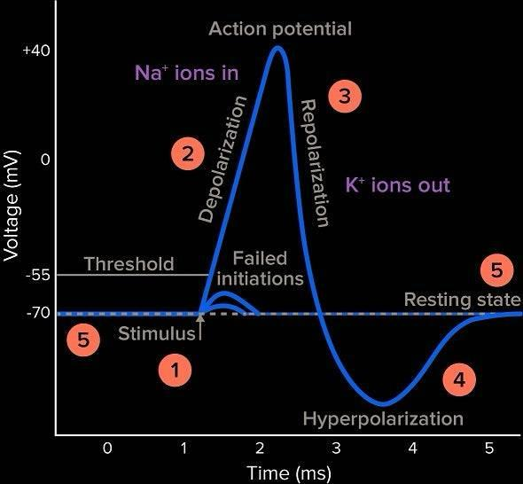
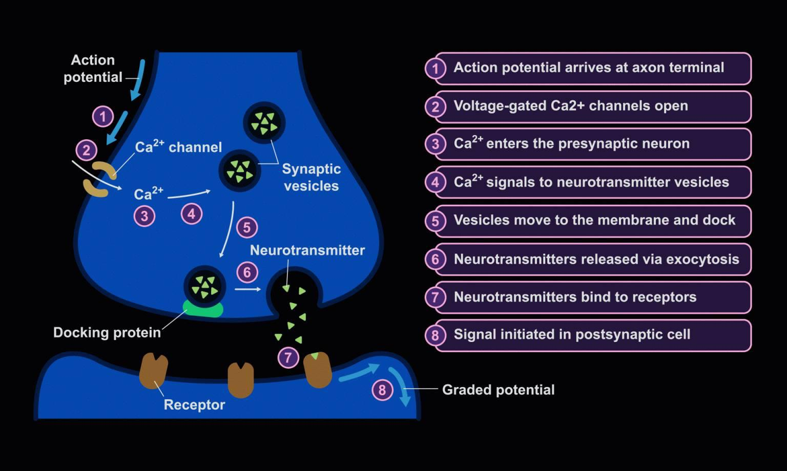

Imagine your body's communication system. It's built from tiny, specialized cells called neurons (or nerve cells). Their superpower? Sending messages super fast using electricity.
- How They Work: Think of a neuron like a mini-battery. It creates an electrical charge, or potential difference (voltage), across its outer skin.
- The Key Players: This charge comes from an unequal amount of tiny particles called ions, mainly sodium (Na+) and potassium (K+), inside and outside the neuron.
- Ready to Fire: This steady charge is called the resting potential. It's like a loaded spring, ready for action.
- The Signal: If that electrical charge changes enough, the neuron "fires" a powerful electrical signal called an action potential.
- Sending the Message: This action potential then zips down the neuron's long "tail," the axon, quickly sending its message to the next cell.
General functions:
- Signal reception → neurons receive signals from other neurons via dendrites.
- Signal processing → the cell body (soma) integrates that information, which determines whether or not to send an outgoing signal (fire an action potential to another neuron).
- Signal transmission → if the cell body decides to fire an action potential, it travels down the axon to release neurotransmitters into the synapse, so that a postsynaptic cell can pick it up.
Types of potentials:
- Resting potential → a state in which the neuron is not firing an action potential; typically at -70mV (the intracellular environment of the neuron is more negative than the extracellular fluid).
- Graded potentials → weaker stimuli that do not reach action potential threshold. They are localized and not strong enough to be fully propagated. An action potential is an all or nothing event, so graded potentials, unless added together, cannot trigger an action potential.
Excitatory graded potentials make the intracellular charge more positive (depolarization).
Inhibitory graded potentials make the intracellular charge more negative (hyperpolarization).
- Action potentials → characterized by a rapid depolarization (positive charge) and full propagation of the positive charge along the entire axon. Action potentials are an all or nothing event, they can only occur if cell potential reaches threshold (-55 mV → -40 mV).
Parts of the action potential:
- When a series of graded potentials are fired and reach an action potential (-55 mV), it opens sodium-gated ion channels.
- Sodium-gated ion channels allow for an influx of sodium ions, leading to depolarization (becoming more positively charged, or less negatively charged).
- This process happens along the entire length of the neuron, opening all subsequent sodium channels till it reaches the end of the axon.
- After depolarization, the voltage-gated sodium channels close and voltage-gated potassium channels open, allowing for potassium ions to flow out of the cell - returning cell potential to a more negative charge.
- Potassium channels take a while to close, so hyperpolarization, the undershoot of cell potential may occur.
- A refractory period is put in place, meaning that it cannot achieve another action potential till it has been restabilized.
- Restoration is done by the sodium-potassium pump (Na+/K+-ATPase), an active transport protein that uses ATP to pump three sodium ions (Na+) out of the cell for every two potassium ions (K+) it pumps into the cell simultaneously. This unequal exchange contributes significantly to maintaining the -70mV resting potential and the electrochemical gradients necessary for future action potentials.
- Shortly after, the neuron returns to its -70mV resting state, ready to experience another action potential

Myelin Sheath: Many axons, especially in the peripheral nervous system, are covered by a fatty insulating layer called the myelin sheath. This sheath is formed by specialized glial cells (Schwann cells in the PNS and oligodendrocytes in the CNS) that wrap around the axon. The myelin sheath is not continuous; it has periodic gaps called Nodes of Ranvier.
Saltatory Conduction: The myelin sheath significantly increases the speed of action potential propagation through a process called saltatory conduction (from the Latin "saltare," meaning "to leap"). Instead of propagating continuously along the entire axon membrane, the action potential "jumps" from one Node of Ranvier to the next. Voltage-gated ion channels are concentrated at these nodes. When an action potential reaches a Node of Ranvier, it triggers a new action potential, which then passively spreads rapidly under the myelinated segment to the next node. This "jumping" mechanism is far more efficient and faster than continuous conduction in unmyelinated axons.
Synapses
- The neuron sending the action potential is called the presynaptic neuron.
- The neuron receiving the neurotransmitters from the presynaptic neuron is called the postsynaptic neuron.
- A synapse is made up of the presynaptic neuron, postsynaptic neuron, and synaptic cleft (actual gap).
Types of Synapses:
- Synapses are the junctions between two neurons. They can be either chemical or electrical.
- Chemical synapses → neurotransmitters (chemicals) are used to transmit signals - happens across a gap.
- Electrical synapses → ion channels are used to directly pass - happens with direct contact.
- Neurotransmitters are found in synaptic vesicles and fuse with the postsynaptic membrane to trigger a response (action potential).

Written by Josephine Ankomah